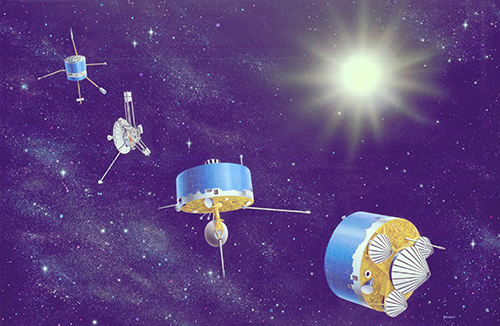
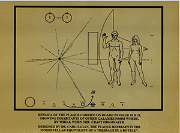
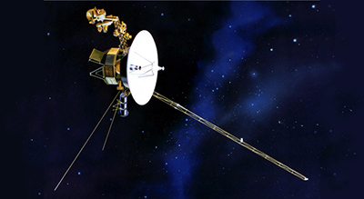
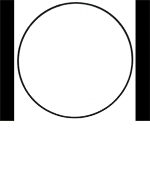
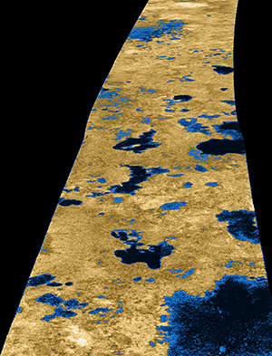
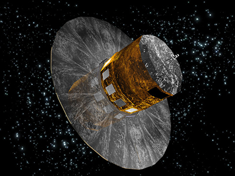
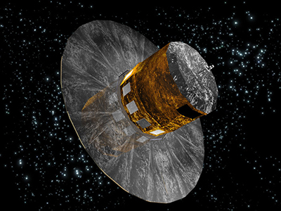

EXTRA
TERRE
STRIAL
ex·tra·ter·res·tri·al (ĕk′strə-tə-rĕs′trē-əl)
adj.
Originating, located, or occurring outside Earth or its atmosphere: intelligent extraterrestrial life.
n.
An extraterrestrial being or life form.
The Free Dictionary
SOLI
LOQU
IES
so·lil·o·quy (sə-lĭl′ə-kwē)
n. pl. so·lil·o·quies
1.
a. A dramatic or literary form of discourse in which a character talks to himself or herself or reveals his or her thoughts when alone or unaware of the presence of other characters.
b. A specific speech or piece of writing in this form.
2. The act of speaking to oneself.
The Free Dictionary
LOQU
IES
so·lil·o·quy (sə-lĭl′ə-kwē)
n. pl. so·lil·o·quies
1.
a. A dramatic or literary form of discourse in which a character talks to himself or herself or reveals his or her thoughts when alone or unaware of the presence of other characters.
b. A specific speech or piece of writing in this form.
2. The act of speaking to oneself.
The Free Dictionary
> > > > > >
I
N
D
E
X
Abstract p.
Introduction p.
Chapter_1 p.
Chapter_2 p.
Chapter_3 p.
Chapter_4 p.
Conclusion p.
References p.
Appendix p.
N
D
E
X
Abstract p.
Introduction p.
Chapter_1 p.
Chapter_2 p.
Chapter_3 p.
Chapter_4 p.
Conclusion p.
References p.
Appendix p.
A
B
S
T
R
A
C
T
In 1972 and 1973, NASA
National Aeronautics and Space Administration1 launched two probes into outerspace called the Pioneer 10 and Pioneer 11
A family portrait showing (from left to right) Pioneers 6-9, 10 and 11 and the Pioneer Venus Orbiter and Multiprobe series.
Image date: March 11, 1982.
Image Credit: NASA
spacecrafts. Both of them had a gold-anodized aluminium plaque. 
The plaque was designed by Dr. Carl Sagan and Dr. Frank Drake and drawn by Linda Salzman Sagan. Image Credit: NASA
on board engraved with illustrations of the physique of a human male and female. With additional symbols explaining its origin. These plates were added to the spacecraft to communicate with any extraterrestrialex·tra·ter·res·tri·al (ĕk′strə-tə-rĕs′trē-əl)
adj.
Originating, located, or occurring outside Earth or its atmosphere: intelligent extraterrestrial life.
n.
An extraterrestrial being or life form. life form that might come upon them. Some years later, in 1977, NASA launched the Voyager probes Voyager 1 has entered interstellar space. The NASA spacecraft, which rose from Earth on a September morning 36 years ago, has traveled farther than anyone, or anything, in history. source
On board they included golden phonograph recordsNASA placed a more ambitious message aboard Voyager 1 and 2-a kind of time capsule, intended to communicate a story of our world to extraterrestrials source
containing a selection of sounds and images selected to portray our way of living on earth. The launching of these spacecraft could be compared to throwing a bottle with a message in the ocean, hoping that someone, or something, will encounter it and be able to read the message.
But in the case of such an encounter, would these images and sounds be sufficiently communicative? How will it communicate with a life form that we know nothing of? What kind of influence does the choice of communication have on the first encounter? Can we apply the knowledge we have from our own ways of communicating?
In the last century, technological advancements have made it possible for humankind to explore the universe we live in. With the vast amount of galaxies already discovered—and that amount is only rising—it could be said that it is only a matter of time untill we find another life form in outerspace. And who is to say whether these life forms are capable of communication? It might be bacteria, dwelling in the depths of TitanHydrocarbon lakes on Titan are believed to be a possible home for methane-based, oxygen-free cells.
Cassini radar image, 2006.
’s methane lakes. But we might also stumble onto a planet whith a rich flora and fauna, just like our planet Earth, providing accomodation for a species capable of basic or highly advanced communication skills.
Apart from the possibilty that they exist, who is to say we will make first contact with them? They might innitiate contact. Will we be able to understand each other? Who decides on the content of our message? How important is our cultural context in such a message?
Until we actually do make contact, the answers to these questions will remain mostly unanswered. But, we can at least consider them, seeing as the search for answers to these questions can teach us a lot about our own ways of communication and the way we look at ourselves as a species.
> > > > > >
I
N
T
R
O
D
U
C
T
I
O
N
In the hypothetical case of contact with an extraterrestrial life-form, what will the design of such a way of communication look like?
N
T
R
O
D
U
C
T
I
O
N
On the morning of On the morning of the 28th of September, 2015, I was sitting at my desk working on this very thesis, when I received a message from a friend, telling me that NASA was to announce something big that evening. My mind immediately jumped to the conclusion that they must have found evidence of extraterrestrial life forms. Which would have been great, seeing as it would make writing this thesis even more relevant. Unfortunately, they didn’t. What they had found was proof of liquid water on the surface of Mars9, which is less exciting as the discovery of otherworldy beings, but for NASA and the future space endeavors of humandkind, still a big deal.
But what if we actually did find evidence of an extraterrestrail life form. Would we want to communicate with it? In the course of the last century, a number of messages have been sent into outer space with the express intent to communicate with extraterrestrial life forms. So yes, it seems that there is a need for communicating with extraterrestrials. However, as of yet, they remain unanswered. They have become soliloquies—spoken with the supposedly collective voice of the inhabitants of Earth and sent into the great void of space. The terrestrial context that we are accustomed to communicating in has been replaced here with an extraterrestrial one, and as such, the terrestrial design of these messages will have to make way for an extraterrestrial design.
It all might sound like science-fiction; entertainment for star-gazers and conspiracy-theorists. But it’s more than just that. In history, science-fiction has been used as a reflective device to predict the future and to hypothesize about the direction we as humankind are going into. Using our imagination it has taken us beyond the limits that science has given us in the past. It is used to reflect upon our society, to give social, economical and ecological commentary, and to explore the immensity of the universe, and the part that we play in it. Science-fiction, in combination with modern science, has made us aware of how absurdly small10 our planet is amongst the billions of stars, and how uniquely populated it is. Besides, many subjects that science-fiction has dealt with that seemed far-fetched at the time, were an inspiration for modern science and have become part of our daily life. Think about men walking on the moon (First men in the moon11), mobile phones (Star-Trek communicators12) and commercial space-travel13 (2001: A space odyssey14)
There is, however, still one subject that has eluded the transition from science-fiction to science and is still solely a product of fiction. And that is the subject of extraterrestrial life. The age old question that deals with whether we are alone in this universe or not. With the limitations of science in earlier centuries there wasn’t much contemplation towards the idea of extraterrestrial life, as our knowledge of the universe was limited, and we were still focused on figuring out things on our own planet. In the last century though, science has given us better and more powerful tools to observe and explore the universe we live in, and the possibilty of the existence of extraterrestrial life has become a more likely scenario. It is the opinion (and maybe dream) of many scientists (and myself) that it will only be a matter of time until we find proof of extraterrestrial life forms.
“I think we’ll find E.T. within two dozen years” 16
And when we finally do make contact, it will be an entirely new question on how we are going to communicate with one another. Both in a practical way in the case of actual communication and in a reflective way; who are we and what can we say about ourselves? Therefore my research question is as follows:
For researching this question, I will be taking a closer look into the attempts of fiction to describe such contact, the actual attempts that have already been made to make contact, and the way communication studies here on earth can help in designing a successful form of communication. Is is important, however, to keep in mind that that there is still a chance of us being alone in the universe. If that is the case, is it still worth the effort to send messages into outer space? Is contact with extraterrestrials really the sole purpose of these messages, or is there an underlying existential incentive that could be traced back all the way to the first comunications of humankind?
> > > > > >
C
H
A
P
T
E
R
.1Case study:
H
A
P
T
E
R
.1
Case study:
Mars Attacks!
As mentioned before, one of the popular methods to hyphothesize about communicating with extraterrestrials is that of fiction. In both books (list) and movies (list) many scenarios are played out. Ofcourse, the dramatic element is of great importance when it comes to these kind of stories, and as such, many of them depict the extraterrestrials as a benevolent species here to destroy mankind. But even these stories can help us in thinking about communicating with extraterrestrials. In the 1996 movie Mars Attacks!17, a seemingly friendly representative party from Mars lands its flying saucer in the Nevada desert to meet with humankind. They are warm-heartedly welcomed by a US army general. When the Martian and human are standing face to face, the human general sticks out his hand in order to give the Martian ambassador a handshake, but this gesture is not recognized by the extraterrestrial. The general then remembers one of the Martians making a circle with its finger in a scene before and continues by doing the same; a first understanding between humans and Extraterrestrial has been made. A long-haired hippie in the crowd releases a white dove to give the moment a symbolic meaning. The dove flaps happily over the ecstatic crowd and is then incinerated by an energybeam originated from the gun of the Martian ambassador.
This scene, however silly and exaggerated the rest of the movie might be, has some interesting points when it comes to communicating with extraterrestrials. First of all, the handshake initiated by the general. A handshake is a gesture of which the origins can be traced back all the way to the ancient Greeks18. It is usually meant as a way of introducing oneself into a social situation. But, handshakes are known to spread germs, which can be some of the most powerful weapons. When America was ‘discovered’ in 149219, most of the native Americans died from the diseases20 Europeans brought with them to this promised land. Therefore, to avoid being wiped out by exotic and unknown diseases, it should be considered to initially refrain from any sort of physical contact. Besides, the relevance of a handshake is based on the shared knowledge of both the receiving and innitiating party that when one sticks his hand out towards the other, that hand is supposed to be grabbed by the opposite hand of the other after which both hands are shaken up and down by an agreeable amount of time. But even as simple a gesture as a handshake can end up in an awkward situation when different cultures with different customs meet21. Either way, this seemingly small gesture, that has many variations already, has a lot of cultural and social relevance, to humans that is. When meeting with a life form from another planet, chances are small they will understand the significance and meaning of it. Also, they might not have hands. There are many thinkable ways in which the physical act of shaking hands can be interpreted negatively. This tells us that it is important to keep in mind that an extraterrestrial life form might have a completely different physical appearance than ours, an anthropocentric approach to any form of communication and/or design is therefore discouraged. The problem this gives us is how to translate a simple gesture like a handshake to something non-anthropocentric.
The Martian does have hands though, but he doesn’t seem to understand the gesture of the handshake, the general therefore continues by pointing his finger in the air and moving it in the motion of a full circle, which the Martian repeats. This is actually a more realistic portrayal of how humans could initiate contact with extraterrestrials, seeing as many scientists agree that the language of physics and mathemetics is a universal one, as these are mostly constant throughout the universe. A circle, for example, is abundant in the universe. Also, as Bruno Munari22 pointed out, the circle seems to be one of the constants when looking at forms of human languages.
One of the first ‘modern’ proposals for actually communicating with extraterrestrial life forms was done in 1820 by German mathemetician Carl Friedrich Gauss23 (1777-1855) who, in an attempt to create what might be considered one of the largest pieces of land art ever, suggested to cut down an enormous portion of a Siberian forest in the shape of a triangle with three rectangles attached to it and replant the area with wheat. These shapes seen from space would suggest an understanding of the Pythagorean theorem, a mathemetical equation that only an intelligent life form could be capable of understanding. According to Mr. Gauss, they would be large enough to be seen by life-forms on the Moon or Mars. A similar proposal came from Joseph Johann Littrow (1781 - 1840), although his was a bit more extreme. He suggested to dig enormous 30 kilometer wide canals in various geometric shapes in the Saharan desert, fill them with kerosene, and light them on fire. This to create giant signal fires which, ofcourse, would show any extraterrestrial paying attention a sign of human intelligence on Earth. In 1919, animator Max Fleischer made a short animation explaining a proposal that would include a huge field of lights to be installed somewhere on Earth.
The large scale of these interventions can be compared to the Nazca lines14 which some believe to be ancient messages to extraterrestrials. However, the exact meaning of these lines are lost in time. These kind of large scale geological interventions are also called geoglyphs, These interventions are also a good indication of how even in the early days of space exploration the language of mathemetics (geometry) was already considered a viable candidate as a form of communication with extraterrestrial life forms. It must be said though, that mathematical functions are still the product of human thought processes. We use the Pythagorean theorem31 to measure a certain value of a two-dimensional Euclidian plane. This theorem is based on the way we as humans perceive space. An extraterrestrial might have a completely different percept of space. But if the intention of our communication is only to make ourselves known in the universe, mathematics can be used as a means of telling any extraterrestrial life form that is listening or watching that there is (fairly) intelligent life here on Earth.
This would certainly go for an extraterrestrial civilization that has superceded its biological form. The knowledge on robotics and artificial intelligence is rapidly increasing on our planet, so there is no reason not to consider the possibility of an alien civilization that has become completely artificial. In such a way, our first contact with extraterrestrial life forms might be with a computer. The usage of scientific languages such as mathemetics also seem to work when communicating measurable things like blueprints, directions and technologies. But next to such an exchange of objective knowledge, how we will be able to express ourselves? Science alone might not be enough to communicate the complexities of our emotion and cultural concepts. Even Earthlings amongst each other tend to struggle when it comes to these subjects—sometimes because of a difference in language and culture, and sometimes simply because one can’t find the right words for expression.
A more recent example of an intervention that could be seen from outerspace was done by car manufacturer Hyundai25, although this message was intended for a human receiver, with a subjective message and with a commercial purpose. The question is whether or not it is still necessary to make these kind of landmarks to show our existence, since we already have, both during night26 and day27. Any Martian with a telescope strong enough will be able to see our intelligent presence here on Earth. Our cities are growing bigger and emit enormous amounts of artificial light. In this way we are already communicating our presence, just not with any intentional message, that could be the next step. However, in the early 19th century, it was widely believed that there was in fact life on Mars. It was even so commonly accepted there was life on the red planet, that the Pierre Guzman Prize28, which would be given to the first person to succesfully communicate with an extraterrestrial life form, excluded Mars as it seemed to be too easy of a target. This misconception came into being by Italian astronomer Giovanni Schiaparelli (1835 – 1910) studying Mars, who decribed seeing long, straight canalli29, an Italian word for a natural occurrence. The English-speaking academics mistook the word for engineered canals and so, by an error in translation, the Martians were born. Percival Lowell later further developed this theory30. This teaches us that even phenomena that look at first glance to be made by intelligent beings, are not necessarily so. One example of this on Earth are the Fairy circles30 (img) in Southern Africa. They seem to be engineered in some way but are actually the result of a natural process.
The next part in the fictional encounter between humans and Martians is one of miscommunication. The white dove is one of the many kinds of birds that inhabit our planet, but to us humans, it has a special meaning. It is a symbol of peace that has been taught to us by cultural knowledge in the community we live in. When using a model like that of Saussure32 to analyse the symbolic meaning of a white dove, it can be said that the white dove in its form is the signifier and the concept of peace is the signified. To most of us, a white dove symbolizes peace, love and good intentions. During the evolution of our many cultures, the world has become saturated with these kind of symbols—we have given meaning to virtually every object, gesture and living thing thinkable.
“We think only in signs” 33
A finger of the hand can either offend34, support or direct, and depending on the culture and context of usage these meanings assigned to the fingers can differ.
When designing something for human use, say a book, every design choice has a certain connotation, whether intended or not. A certain typeface, the use of imagery and color, they all have something to say. A graphic designer is someone who uses these connotations to their advantage in order to convey a message. And this message is readable depending on the context in which it is displayed. Terrestrially speaking, this context is often cultural. The Martians, however, haven’t had the same cultural evolution as we did. Any meaning that we are able to extract from a message in a terrestrial context, might not be extracted by an extraterrestrial in an extraterrestrial context. For them, the only context they have is the carrier and the content of the message itself. The arrow on the pioneer plaque for example, is a typical anthropocentric symbol, which is derived from our historic usage of arrows, and which to us has become a way of pointing out a certain direction. To us, this seems clear, but to a life form that at no point in its history made us of arrows it might prove to be confusing. But what if were able to add this terrestrial context? Up until now, the contents of the messages sent didn’t have more than a couple of MB’s worth of data. This capacity greatly diminishes the amount of contextual information we can add. If there was no data limit, wouldn’t it much simpler to add everything? A complete render of Earth and everything on it accompanied by annotations, pictures, videos, sounds etc. Why try to explain the world that we live in if we can show it?
> > > > > >
C
H
A
P
T
E
R
.2Lessons from
H
A
P
T
E
R
.2
Lessons from
our past
In the 1997 movie The Fifth Element35, an archeologist finds strange markings among Egyptian hieroglyphics. They appear different from the rest and seem to refer to something of extraterrestrial origins. This usage of ancient civilizations in science-fiction is not uncommon. In many books and films, and even in some historic theories, the mystery that often still surrounds these ancient civilizations is used as a way of explaining the initially mysterious imagery often found in archeological expeditions.
As mentioned before, in our search for a way of communication with an extraterrestrial life form there is one main issue; we know nothing of said life form. We don’t know anything about its appearance, its evolutionary path and most importantly, its society. In other words, we don’t know who or what our recipient is and in what context we should construct our message. The only life form where we do know all these things of, is ourselves. It might therefore be a good idea to take a look at humankind, our history of communication and the terrestrial context of that communication. Much of the knowledge that we have of our ancient civilizations is gathered through the study of books, art and other representational works that these civilizations have left behind. But, as said before, there are still a great many things left that are a mystery in our history. Why is it that—even when we did leave behind traces of our existence—we still can’t always find out what these traces mean in order to learn more about these civilizations? To answer this it is therefore important to distinguish two kinds of communications. The first is to ‘simply’ convey presence. To say that we are here. This could already be achieved by creating patterns that are distinguishably artificial, like the geographic and geometric interventions mentioned before. The second one would be a way of meaninful communication. One where ideas and concepts would be conveyed. The problem with this kind of communication is that the chances of us understanding any extraterrestrial message of this kind is very low, the same goes for any message we send them. We only have to look at our own history for that.
The history of our (recorded) visual communication goes way back. Some 40.000 years back. When prehistoric man started creating drawings and paintings on the walls of caves. The paintings in a cave at Maros36, Indonesia, are some of the oldest with a figurative character. We can clearly distinguish the shapes of animals and the contours of hands. This is because we know from context what terrestrial animals and hands look like. The exact meaning of these paintings is unknown, and will probably never be known, but what we do know is that they still communicate an intelligent presence to us. They are important for us because they are the first examples of human attempts at conveying a message through a visual medium—the first design derived from an intellectual thought process. But what if these paintings were to the prehistoric human what the extraterrestrial messages are to us now—a way of communicating with the unknown? Or even to immortalize its creators. Their intended recipients might be gods, extraterrestrials, or even future generations—us. If so, our space messages are a contemporary way of communicating towards the unknown. They are contemporary cave paintings. What happens though when the representative context isn’t there? What if the lines aren’t as figurative as the ones on Maros? In Southeast Europe, artifacts have been found that contain nonfigurative inscriptions of which the origin is unknown. These so called Vinca symbols37, named after the town of Vinca near Belgrade, where a large number of inscriptions have been found, are made out of lines and shapes of which the meaning is not recognizable by context—they are abstract. Archeologists and linguists therefore believe them to be among the first examples of symbols, where the object or figure depicted represents another idea or concept. This idea or concept is known only by the members of the society in which it is used. And since the society that created the Vinca symbols does not exist anymore, and no ways of deciphering them has yet to be found, it might be that the symbols will forever remain unreadable to our society. We know they are made by humans, but we do not know what they mean. And if we can’t even read messages created by a human civilization a couple of thousand years ago, how on earth will we be able to create a message that an alien civilization hundreds or thousands of lightyears away can read?
For that, we would have to look at the way other ancient languages have been deciphered. With the most notorious being the Egyptian hieroglyphics. After the demise of the ancient Egyptian empire, the language of their hieroglyphics and related languages were almost completely lost due to the mostly Christian and afterwards Arabic period of influence that followed. This made it for archeologists and liguists in later centuries an almost impossible task to decipher any inscriptions they would find in the many tombs and artifacts they found. The entire ancient Egyptian civilization was covered in a cloud of mystery, which could only be solved through the deciphering of its language. Many theories arised on what the hieroglyphics could mean, but most of these were based on the assumption that they were figurative in essence—that what they depicted was also what they represented. It wasn’t until the discovery of the Rosetta Stone38 that a breakthrough was found for deciphering the ancient language. The stone would become the very key to understanding the entire civilization. It carried one text written in three different languages—Egyptian hieroglyphics, Demotic script and ancient Greek. By using the knowledge readily available on the Greek language, scholars were able to translate the other two language, which resulted in the final deciphering of the Egyptian hieroglyphics. It turned out the hieroglyphics were a complex mixture of alphabetic and symbolic glyphs. Only through comparison with a known language was the ancient Egyptian language decipheribale. The relevance of this analogy lies within the usage of the Rosetta Stone as a cipher—a tool to decipher an encrypted message. Therefore, if in a message any form of a visual language would be used that incorporated symbolic meaning, it would be important to add such a cipher to enable the receiving party to decipher the message. This cipher could be ranging from the usage of a certain code or—as with the Rosetta Stone—by repeating the message in multiple ways. The only problem with this is, that with the Rosetta Stone there was the Greek language to fall back on. A cipher only works when one knows what to translate to. This will probably not be the case with extraterrestrials.
In other cases of indecipherable systems of writing from the past, the amount of researchable specimens plays an important role. The Easter Island civilization for example, is widely known for its mysterious statues, but far less known is the Rongorongo writing system, a set of glyphs discovered in the 19th century. Only a handful of objects containing the glyphs have been found, and most of them, being wooden samples, are in bad condition. This makes it extremely difficult to find any patterns in the system, as there is little data to compare. A durable container for the message would greatly increase the possibilty of discovery and/or decipherment. If we want our message to last for many thousands of years, materials like diamond, gold or graphene(expln) can be used for durability. The remote location39 of the island meant that there was little to no contact with other civilizations, and therefore no translations in other writing systems exist. These factors contribute to the fact that the Rongorongo writing system hasn’t yet been deciphered.
> > > > > >
C
H
A
P
T
E
R
.3The politics
H
A
P
T
E
R
.3
The politics
of content
Earlier I mentioned that the messages that we have sent are spoken with the supposedly collective voice of the people on Earth. And certainly, most of them were an attempt to create a collective and objective view of Earth and its inhabitants, but upon further study it becomes apparent that none of them actually are. The message we send to extraterrestrials has the potential to tell them a lot about us. But it can also tell us a lot about ourselves.
This is where the science-fiction becomes a reflective device for humankind.Sending messages intended for extraterrestrials is a quite recent develepmont (if we exclude the Nazca lines and such early constructions, seeing as the meaning of these has been lost). An absurd notion is that one could argue that the decline of religion39 is one the factors contributing to our new way of finding meaning in the universe—if there is no god out there that will hear us, maybe there is another life form? There have been some written proposals, but the Pioneer plaque was the first physical object sent into space with a designed message intended for extraterrestrials. At first glance this message seems like an objective representation depicting the origins and the creators of the plaque. As seen before, it contained the two-dimensional image of a nude human male and female. On the plaque a man and woman stand before an outline of the spacecraft. The man’s hand is raised in a gesture of good will. According to NASA “The physical makeup of the man and woman were determined from results of a computerized analysis of the average person in our civilization.” 40 Yet, Carl Sagan41 (1934 -1996) explains their appearance is based on Greek statues42, making them considerably caucasian. The male is raising his hand as a way of greeting. His genitals are cleary visible. The female is standing next to him, with both arms lowered, and without any clear genitals. Is this a truthful representation of the diversity, biology and social structure of humankind? It seems that in both race and gender the image favors the caucasian male. For this, the image has received a lot of critique, from multiple points of view. One saying that the image is racist by showing a caucasian male and female to represent all of humankind, the other saying the image is too pornographic42, and that the nudity is uncalled for. This shows that designing an actual objective message is impossible, seeing as every design decision has a certain connotation, and implies a certain subjectivity, and will be interpreted in a certain way.
What is worth mentioning is that the Golden records that were sent into space some four years after the Pioneer plaques were, contained 126 images43 including photos of many different ethnicities, a female scientist and nudity. It seemed like NASA listened to the people of Earth, except the prudes. They created a utopian view of Earth and humankind. Here it is not so much about actually communicating with extraterrestrials anymore as it is about making a reflection of life on Earth at a certain moment. The Golden Records were a message to both extraterrestrials and humans. Again, it seems that its creators attempted to create an objective message, illustrating a complete and unbiased picture of life on Earth. But, by trying to include as much as possible to form this complete picture, a great many things are inevitably excluded, as it is impossible to include everything. The attempt tells us a lot about the state of mind of that certain time. Even now, only a few decades later, it seems very outdated already. It included images that helped build a positive image, and excluded the negative. This raises an important question. When it comes to communicating with extraterrestrials, do we give a truthful description of who we are, or do we edit the truth? If we compare with interhuman relations, an edit of the truth would seem the most obvious choice. After all, we do our best to present ourselves in the best possible way when we first meet another person. So why wouldn’t we in the case of a first meeting with an extraterrestrial life form? Do we only show the positive sides of humankind or also the great amount of negative ones? A reason for also showing the negative side of humanity could be that the extraterrestrials might have experienced the same problems in earlier stages of their civilization, and now have the knowledge to overcome them. They might have definitive answers to the issues that threaten our existence. But who decides on this important editorial question? Should this kind of decision-making be left to a select group of experts or is a more democratic way desirable?
As a response to the Golden Records, Artist Trevor Paglen created his own collection of images in 2012 which he called The Last Pictures 44. They were engraved into a metal plate and attached to a satelite that would eventually end up in permanent orbit around Earth. This means that even in a millions years, when life on Earth will have dramatically changed, these pictures are still orbiting our planet. Much the same as the messages and carriers we sent intended for extraterrestrials. Most of these will take many thousands of years to reach their destination, or will even travel through space indefinitely. For Paglen, the selection process of these pictures differed in such a way, that he did not try to create a perfect picture like that on the Golden Records. Instead, he talked with philosophers, artists, anthropologists and scientists to come up with a collection that would describe life on Earth as it as at this moment, with its positive and negative sides.
The same can be said about both the probes and the golden plaques and records onboard of them; they have become monuments of our civilization that will most likely outlive us. And by thinking about how we might communicate with our future selves, we inevitably create a state of mind that reflects upon our actions now and how they will affect us in the long run.
“The idea that we can “communicate” anything whatsoever to anything outside our own social and historical context is preposterous.” 45
‘The Last Pictures’ isn’t neccesarily an actual attempt to communicate anything to otherworldy beings or distant future generations, since most of the pictures have no meaning without contemporary context—the same can be said about the Golden Records. If an extraterrestrial or future life form would look at these pictures they would most likely not be able to find any meaning in them. The actual attempts themselves however have a certain value of optimism towards the future, as they are meant to last thousands of years from now. They are ment to survive us. Trevor Paglen’s project was also a very personal one, and although he did consult a multitude of experts, in the end he selected the pictures himself, which leads us to the next question—who decides on the content of a message to be sent into space? It does seem that in the last two decades, the METI (Messaging to Extra-Terrestrial Intelligence) approach has gotten a more democratic approach. Where first only a select few were deciding upon the design of such representational messages, the idea of a global (or at least widespread) discussion before sending any new messages has caught on. The Teen Age Message, the Bebo competition and the One Earth Message all seemed to favour this kind of content generation. A problem with this seemingly democratic way of forming a message, is that it is mostly done by online participation. And according to a recent study done by the ITU50, only 40% of the world’s population has internet access. Meaning that more than half of the population will not have a say in the creation of this message. What is noticable is that the the content generated always resembles that of the first attempts at communicating with extraterrestrials, even with the ones that are supposed to be a critique on them. It seems that these early attempts have become a template of some sorts, which could be attributed to the fact that sending a message into space is still a rather costly venture, often done with taxpayer’s money and thus governments involvement, and in these cases risks aren’t often taken for political reasons. If politics were of no importance, would we still create messages of the same sort? Or what if we could create our own personal message, and pay a corporation to deliver it, or even deliver it ourselves? First steps towards this free-market-interstellar-communication-system have already been made. Soon, we will all be able to send our messages into outer space. Astrobotic(https://www.youtube.com/watch?time_continue=33&v=y4xQ9e6zGaM) is a company that will send an object of your choosing to the moon for a (comparatively) feasible price. Objects could range from scientific instrument for a university, branding items for commercial businesses (http://lunar-dream.com/) or personal items. This gives us an oppurtunity to move away from messages that try to please an international and global political agenda, and go towards more personal, subjective forms of communication, that are created by either individuals or groups of people without any (terrestrial) political agenda. But do we want everybody to be able to send these messages? Should we apply a filter to these messages, in order to filter out abusive or insulting messages? For a government this task is difficult, as censoring is a politically dangerous area —hence the objectivity in government messages—but a corporation already has more freedom in this. They can provide anonimity, much like a confessional booth in church. Political or not, these messages all have in common that they are made by humans, by means of human decision-making. This will always result in a biased and subjective content, even when attempting to remain objective. A way of making sure the content is less biased is to generate it ‘randomly’. A set of rules could be created to generate the content for us. And to make it even easier, we could let a computer do the work. This will eliminate an amount of subjectivity, but it should not be forgotten that these rules are still engineered by human minds, and a computer is still operated by human input, and therefore can not be truly random and/or objective.
> > > > > >
C
H
A
P
T
E
R
.4
H
A
P
T
E
R
.4
Container
After having given thought to the ways we give meaning to our messages, it is time to think of how to contain them—what shape we give to them.
4a: Multiple dimensions
As said before, a cipher is a good option to add to any message we will send. An example of such a message containing a sort of cipher is the Arecibo Message51. This message, sent from Puerto Rico with the Arecibo Radio Telescope52 in 1974, was the first powerful radio message constructed with the specific goal to communicate with extraterrestrials. The message contained an encoded and static image, made out of 1679 bits. The reason for this specific number is because it is a semiprime number (mathematics!), meaning it is only dividable into 73 rows and 23 colums, or 73 colums and 23 rows. This way, the receiving party has the option to arrange the bits either into a horizontal or a vertical arrangement. The first option would generate gibberish53, the latter would show the actual message54. This already has potential for miscommunictaion, since for an extraterrestrial both might look like gibberish. At the top of the Arecibo image, the part that is transmitted first, there is a row of bits that explain how to read the binary message. Even when making use of a cipher, it is important to create a message that is as open as possible to decrypt. If the message is encrypted too good, it will defeat the purpose. The term for this is anticryptography—to make sure the contents of the message are easily extracted. The message contained information about the biology of life on Earth such as a string of human DNA. But why would we send this blueprint of our life? Is it purely for scientific intentions—to share knowledge—or is there a more survivalist intention? To ensure that our genetic code lives on. The message was directed at the globular star cluster M1355, which is 25.000 light years removed from Earth. When the message will reach its destination, we might no longer be around. This shows that the intent of the message wasn’t only to communicate with extraterrestrials, but also to showcase human innovativity.
The Arecibo message was only broadcast once, however. But what if the broadcasting would have continued? The element of time, which is abundant in interstellar communication, can be made use of. It can create a lot of potential for a much more diverse message. Say the original structure of 1679 bits would have been kept the same, but with every transmission a slight alternation would be made. This would in turn result in an interstellar animation. We could animate the human figure, making it act out some basic human gestures(animated image), which would lay a foundation for any future physical meeting—to communicate by mimicry. Just like the human general and Martian did in Mars Attacks! Up until now, every attempt at visual communication has been a static one, the illustrations on the Pioneer plaques, the encoded images on the Voyager disks, the binary code of the Arecibo message. None of them utilize the element of time and space, elements that are abundant when it comes to interstellar communication. One of the simplest ways of conveying a message is by simply acting it out. And if used in the right context, it can already create an understanding of the message. The receiving party would know that us waving our hands at first contact has a meaning, and they could (if their physical form allows them to) recreate this gesture, or else, respond by showing us their custom of meeting at first contact.
One problem with messages such as the Arecibo message is, that the star system to which it is directed at, is 25.000 lightyears away. And communication between these vast distances is different than communication here on Earth. It can take thousands of years, and that’s only considering the “near” stars. Recently, a star has been found of which part of its light is being blocked by something(source). There is a wide range of natural occurences(?) this something can be, like a planet or a cloud of comets-like objects, but due to its irregular shape, some scientists suggest it could be a structure built by an alien civilization. If so, it would be interesting to try and make contact with the engineers of this structure by sending a message towards this star. And this star, named KIC 12557548, is only 1500 lightyears away from earth. Meaning that if we send a message using radiowaves, which travel by the speed of light in the vacuum of space (radiowaves are lightwaves, they just have a different wavelength than the optical lightwaves our eyes can register), it would take that message 1500 years just to get there. And if they were to reply, it would take another 1500 years for us to receive this reply. (For the Arecibo message this means it would take 25.000 years to reach its destination) If we were to establish contact, it would be a very long distance relationship indeed. Also, we have to bear in mind that, since it took the light of the image that we see the same amount of time to get here, we are actually seeing this civilization as it was 1500 years ago. This goes for any form of communication using the speed of light. This element of time makes it important to construct any message as unambiguously as possible, leaving no room for misinterpretation. In the event of a miscommunication or misinterpretation, it would take thousands of years to be able to recover, and consequences could be disastrous.
In the 1997 movie Contact56, Jodie Foster comes upon an alien message transmitted via radiowaves. At first, the message seems to be of a simple mathematical origin, it being a series of prime numbers57, without any further meaning. However, when further studied, the message is found to contain a massive amount of encrypted pages of information, which, by two-dimensional thinking, seem to not fit together in any way. But when looked at in a three-dimensional way, they do. And by using a cipher the extraterrestrials have added to the message, it is decrypted and found to be a blueprint for a highly sophisticated piece of alien machinery.
This thinking in three dimensions for communicating seems to make sense, seeing as the universe is, well, a rather three-dimensional place. As humans, we are used to two-dimensional communication, ranging from the cave paintings beforementioned to printed matter such as books and posters. We are of course no strangers to thinking in three dimensions, as exhibited in some techniques in painting, clearly represented in many renaissance paintings58. Here, perspective is used as a tool to illustrate space. But they are illusions59. They may seem to be spatial, but are actually just strokes of paint applied in such in way that the human eye gets tricked into thinking it can see depth. If one were interested in seeing what is behind the first set of colums in this painting60, trying to look around them wouldn’t yield any results, it would just make you look silly. In time, we have become accustomed to the usage of perspective in two-dimensional representations, but this only applies to shapes and situations of which we already have a spatial understanding. How can we expect any ET to understand a 2D image of a tree when they have no way of knowing what the 3D shape of it looks like (if we assume there are no trees on their planet)? In Contact, the actual message—a blueprint for a highly advanced machine— is embedded in a 2D image of Hitler, which was one of the first international television broadcasts. Hypothetically, the broadcast could have reached outer space and even an alien civilization, but even if they able to get an image out of it, they would have no idea that this moving blob is actually one of the most evil persons the human race has ever produced. How will we ever be able to convey such complex concepts in ‘simple’ 2D images?
In this painting61 there is clearly something not right. The space looks distorted and unnatural to us, since we are trained in looking at two-dimensional images depicting three-dimensional space. This is because the painter, the famous Giotto, was still experimenting with the rules of perspective. But since people weren’t accustomed yet to perspective in paintings, it probably did not look wrong to them. Only after the discovery of perspective in painting this became apparent. The same principle goes for a simple geometric shape62 that is drawn in a slightly unusual way. It is very difficult, perhaps even impossible, to form a proper spatial image of this image using only our imagination. What if the two-dimensional way of portraying space is something inherent to humans or even primitive compared to any far more advanced civiliazation. Theories such as that of Riemannian space63 are just an indication of how space can be interpreted in many different ways.
In the last decades, three-dimensional technologies have come a long way. Up until now, every visual message we have sent contained mostly two-dimensional images, since we were accustomed to this form of visual representation. With technologies such as holography and 3D printing we are heading towards a future where two-dimensional representation might someday become obsolete. And who knows what our next step in spatial representation might be after that of three dimensions? So why would we continue making use of solely two-dimensional imagery, when these images are easily misunderstood or misinterpreted or even undecipherable? We can construct three-dimensional models, that give the viewer the possibility to see the content of the message from different perspectives, contributing to a better understanding of it. This doesn’t mean two-dimensional images are irrelevant. They can enhance each other. Just like with the Rosetta Stone, the content can be created in different forms. Joseph Kosuth used this way of creating meaning in his work “Three Chairs”(img) in which he presented a chair, a picture of a chair and a copy of the entry for chair in a dictionary. With his work he wanted to explore the way we create meaning by representation.
> > > > > >
4b. Harmonics
The extraterrestrials in the 1977 movie “Close encounters of the third kind” seem to have an intricate system of communication. They broadcast a set of musical tones that are heard around the world, and an image that the people who receive it become obsessed with. This image appears to be sent in three-dimensions, as paintings (img paintings) that are painted from different angles are seen and three-dimensional sculptures (img sculpts) are built by the protagonists. The sound (sound of all the times the sound is heard) is a simple tune consisting out of 5 musical notes. When a meeting is set-up, and the extraterrestrials arrive in their spacecraft, scientists play the five tones on a keyboard that is connected to an array of lights. (gif)
The extraterrestrials reply with playing a set of different tones, each accompanied by a colored light. What happens next is a musical and visual collaboratory piece of human and extraterrestrial (img? sound?) art that superceeds any content-driven message but that seems to speak directly driven by—and interpreted with—the senses. This way of bonding is of a more emotional level compared to the rational one of pure mathematics. Does this mean that mathematics and other sciences have to be ignored? No. A lot of musical compositions considered masterpieces are based on mathematical principles. It is said that Beethoven, after going deaf, used a combination of his experience with music and mathematics to create new compositions (https://www.youtube.com/watch?v=zAxT0mRGuoY). The reason this is interesting is that sound (atmospheric vibrations) can be a more direct way of communication than just image. Sound, in combination with other methods of communication, could create a more emotional bond, something mathematics alone might not achieve. It could help in conveying more difficult concepts such as emotions. Also, a highly advanced extraterrestrial civilization might not be interested in our primitive knowledge of sciences. They might want to know more about our culture, our art. Just as we are interested in ancient civilizations, not solely for their sciences, but for their culture and arts.
> > > > > >
4c. The medium is the interstellar message
While exploring space, we leave behind a lot of physical traces. The moon is already littered with items (img list) we have left behind after moon missions. This ‘space waste’ could be the first thing extraterrestrials come upon that will notify them of our existence. Some of this waste is literally waste, such as parts of rockets and satellites no longer of any use to us, or even radioactive parts (src) moving through space. But some of it, such as the US flags on the moon, have an intended use. They have a more symbolic meaning, showing that that part of space has been explored by human beings. The physical objects we leave behind in space will most certainly say something about our species, if we keep polluting it as we do. But some of the artifacts we leave behind are an oppurtunity for communication.
The 2010 documentary Into Eternity deals with the inevitable terrestrial problem of nuclear waste from nuclear power plants. The problem here is not necessarily the storing of it, large repositories are being built for that specific reason, but the way we communicate to our very distant generations that these places should be avoided. In a hundred years this shouldn’t be a problem, but the thing is that most of the waste stays radioactive for many thousands of years, and who knows what civilisations will have fallen and risen by then? They might not be able to read our contemporary warning systems. Therefore, a warning system has to be designed that will remain readable over such a long period of time. Several proposals for these kind of sites have been made, inlcuding giant spikes, a marker system or even a ‘comic’. In many ways, this way of communicating can be compared to that of communicating with extraterrestrials—it is about communicating with the unknown, in a way that will be readable by the unknown.
The planting of flags—like the ones on the moon—can be seen a way of marking a place of newly discovered soil, which reminds us of colonialism in previous centuries(def.). And in some way it is—we are exploring space and seeking for new possibilities. We now have the oppurtinity to prevent the mistakes we made back then. What if the US flag was more than just a flag that was placed to feed a certain national pride and/or claim for property? In a time where individual nationalities seem to become of less importance, we can further explore the universe—and in the case of contact with an extraterrestrial life form, we can identify ourselves—as a post-national entity. It is not only about how we will communicate with, but also how we will present ourselves to extraterrestrials. It is about our identity as a human species.
> > > > > >
C
O
N
C
L
U
S
I
O
N
O
N
C
L
U
S
I
O
N
To communicate is part of human nature. Whether it is on the wall of a cave or on the wall of our social media, we want to make ourselves known. One of our biggest fears is our mortality, our finite amount of time we have on this planet. The infinity of space is only a logical next step for us to explore. One way of doing this is by sending our presence into it, whether these messages will be answered or not.
Up until now, every attempt at communicating with extraterrestrial life forms have remained extraterrestrial soliloquies. Until we actually do make contact—and in turn, make it an extraterrestrial dialogue—it is impossible to find a definitive conclusion on how we will communicate. It is, however, possible, to speculate. And this speculation helps us better understand our own ways of communicating and prepare us for first contact with an extraterrestrial life form. Besides, creating these sort of messages is a form of optimism—it is about saying that we as humankind will overcome our conflicts and problems and explore the universe as a post-national entity. They help us reflect on who we are and how we identify ourselves within the universe we live in.
As to answering my research question (question), it seems that a certain pattern has emerged regarding the ways of conveying the message. As only a limited amount of messages has been sent into outerspace—as the sending of such a message has been costly—it seems that the first extraterrestrial messages from the 1970’s have become a sort of template that every consecutive message that followed has implemented; a selection of audio and static, two-dimensional images, often as separate elements. This limited supply of data can also be attributed to the fact that the technologies used only allowed for a low amount of it.These elements are presented individually from each other. When taken out of context—which means off-planet in this case—they lose any meaning they had, since there is no way of reading them anymore. A way to create meaning would be to combine the different elements to form a more coherent message. One where meaning can be created by the interaction of elements.
“The Whole is Other than the Sum of the Parts” (Kurt Koffka)
Also, as most of these messages have been funded with government money, they are kept as objective as possible, since any subjective statement has the potential to become a political debate. But with technological advancements going hand in hand with the arrival of commercial corporations it seems that in the near future it will become much easier for individuals to send messages into space. Space will not remain the realm of national governments as it has been in the past century, but it will become open for individual enterprises. It can be expected that these messages are much more subjective than the ones containing only objective facts about our biology. If you were able to send a message into space, would you talk about the color of your eyes, or would you go for something more substantial?
Thinking about the problems communicating with extraterrestrials will present to us will not only prove fruitful in terms of said communication, it will also aid us in communicating with our future generations, thousands or maybe even millions of years away from now. And how we can prevent the loss of meaning that seems to have befallen us with human artifacts such as those of the early cave paintings, or the symbols from communication systems that we will never be able to interpret anymore. We musn’t forget the possiblity of us actually being alone in the universe, meaning our messages will remain unanswered forever. What if these soliloquies we sent into space are just a starting point of the creation of a universal language? One that will be readable by humans thousand of years from now. It could be used to create the first entry in the Encyclopia Galactica(src), one that is both readable to extraterrestrials as it is to future generations of humankind.
The message we send will inevitably be subjective, as it is inherently designed by human input. Our only option is to embrace this fact and continue discussion on the subject of extraterrestrial communication. And hope that on the day we make contact, we do not make the mistakes that could have been prevented by speculation—both theoretical as practical—and have a better understanding of who we are and how we want to present ourselves in this inifinitely vast universe.
> > > > > >
References
Articles
Rivera, Mariel. “The Cultural Implications of European Disease on New World Populations: With Primary Focus on the Abenaki, Powhatan, and Taino Groups.” Scholars’ Day Review 1 (2013)
MATEO SOL, Body Language: Hand Shakes, LonerWolf
Popular Science magazine, Hello Mars! September 1919
NSA document on cryptography and extraterrestrial communication:
https://www.nsa.gov/public_info/_files/
cryptologic_spectrum/communications_with_extraterrestrial.pdf
Analysis on the symbolic meaning of a white dove:
http://www.scribd.com/doc/155631078/Semiotic-Analysis-The-White-Dove-of-Peace#scribd
ITU report on world wide internet usage:
https://www.itu.int/en/ITU-D/Statistics/Documents/facts/ICTFactsFigures2015.pdf
Books
Alfabet, hiëroglief en pictogram, de geschiedenis van het schrift, Andrew Robinson, Atrium, 2004
Visual function, an introduction to Information Design, Paul Mijksenaar, 010 Publishers, 1997
Archeology, anthropology, and Interstellar Communication, Douglas E. Vakoch, NASA, 2014
Semiotik / Semiotics - Handbook of Linguistics and Communication Science, Walter de Gruyter, Berlin, New York, 2004
Understanding Media: The Extensions of Man - Marshal McLuhan, 1964
Design as art, Bruno Munari, Penguin, 1971
Cengage Advantage Books: The Power of Art, Richard Lewis, Susan Lewis, Cengage Learning, 2008
Web
www.centauri-dreams.org
www.nasa.com
www.bibliotecapleyades.net
www.space.com/8951-aliens-exist-love-bach.html
www.theintercept.com/2015/10/05/how-scientists-search-the-cosmos-for-alien-signals-even-encrypted-ones/
www.damninteresting.com/nasas-messages-to-the-great-unknown
www.daviddarling.info/encyclopedia/P/Pioneerplaque.html
http://paleofuture.gizmodo.com/a-french-inventor-proposed-a-giant-mirror-to-burn-a-mes-1647075915
http://paleofuture.gizmodo.com/hello-mars-this-is-the-earth-512621065
www.weti-institute.org
www.jpl.nasa.gov/interstellarvoyager
www.virgingalactic.com
> > > > > >

1.National Aeronautics and Space Administration Voyager 1 has entered interstellar space. The NASA spacecraft, which rose from Earth on a September morning 36 years ago, has traveled farther than anyone, or anything, in history. A family portrait showing (from left to right) Pioneers 6-9, 10 and 11 and the Pioneer Venus Orbiter and Multiprobe series.
Image date: March 11, 1982.
Image Credit: NASA The plaque was designed by Dr. Carl Sagan and Dr. Frank Drake and drawn by Linda Salzman Sagan. NASA placed a more ambitious message aboard Voyager 1 and 2-a kind of time capsule, intended to communicate a story of our world to extraterrestrials, www.voyager.jpl.nasa.gov/spacecraft/goldenrec.html NASA placed a more ambitious message aboard Voyager 1 and 2-a kind of time capsule, intended to communicate a story of our world to extraterrestrials, www.voyager.jpl.nasa.gov/spacecraft/goldenrec.html


 
